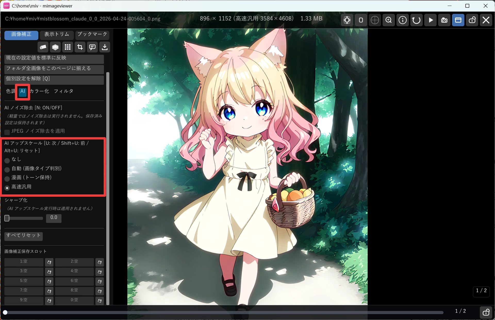

AI アップスケールで拡大して見る
解像度の低い画像や、古いパソコンで作られた小さな CG を、今のモニターでも見やすい精細さで鑑賞するための機能です。 補正パネルでモデルを 1 つ選ぶだけで使え、見ている間だけ効果がかかります。 ファイルに保存したい場合はエクスポートで書き出しますが、ここでは「見る」ことに絞って説明します。
フルスクリーンで AI アップスケールを ON にする
画像をフルスクリーン表示にし、画面左端にマウスを寄せて補正パネルを開きます。 パネル下部にある「AI アップスケール」からモデルを選ぶと、その場で拡大された結果に切り替わります。 補正・ノイズ除去と同時に効くので、まず明るさなどを整えてからアップスケールを選ぶと仕上がりを確認しやすくなります。

選んだモデルが効くのは「今見ている 1 枚」だけ
ここが最初に戸惑いやすいところです。補正パネルでアップスケールのモデルを選ぶと、その設定は いま表示している画像 1 枚だけに記録されます（＝そのページの個別設定になります）。 次の画像に進むと、その画像は元の設定のままです。「この 1 枚だけ別のモデルを試したい」ときは便利ですが、 「フォルダ全体を同じモデルで見たい」ときは物足りなく感じます。
パネルの上部には、いまどの設定が効いているかが 「標準設定を適用中」 ／ 「個別設定を適用中」 ／ 「お気に入り『◯◯』の標準を適用中」 のように表示されます。 まずここを見て、自分がいま この 1 枚だけ を触っているのか、全体の標準 を触っているのかを 確かめるのがコツです。
全体（や広い範囲）にまとめて効かせたいときは、パネル下部のボタンを使います。
| ボタン | 効く範囲 |
|---|---|
| 標準にする | アプリ全体の標準にする。個別設定を持たない画像すべてに効く（いちばん広い） |
| このフォルダの全画像に適用 | いま開いているフォルダ / ZIP / PDF の全ページへ、今の設定をコピーする |
| このお気に入り「◯◯」の標準にする | お気に入り登録したフォルダの配下にいるとき、そのお気に入り配下で効く標準にする |
レトロ CG を鑑賞する流れ
古いパソコンの画像形式（PC-98 の PI / MAG、X68000 の PIC など）は、そのままでは mImageViewer で開けません。Susie 画像プラグインを組み合わせて開き、 AI アップスケールで今のモニター解像度に合わせて鑑賞するのがおすすめの流れです。
- 対応する Susie 画像プラグイン（
ifpi.spi/ifmag.spiなど）を、環境設定の「ファイル処理 → Susie プラグイン」からプラグインフォルダに配置する - 配布アーカイブが LZH などの場合は、クリックして ZIP に変換してから開く
- 変換後の ZIP を開き、中の画像をフルスクリーンで表示する
- 補正パネルの「AI アップスケール」を ON にし、モデルを選ぶ
640×400 クラスの小さなレトロ CG も、4 倍のアップスケールで現代的な解像度まで引き伸ばして鑑賞できます。
画像の内容に合わせてモデルを選ぶ
迷ったら「自動 (画像タイプ判別)」を選べば、画像の内容からモデルを自動で選んでくれます。 仕上がりの傾向を変えたいときは、以下から手動で選び直せます。
| モデル | 向いている用途 | 使えるモード |
|---|---|---|
| 自動 (画像タイプ判別) | イラスト / 漫画 / 写真・CG を自動判別して最適なモデルを選択 | 軽量・高画質 |
| 写真・CG (ノイズ除去強) | 汎用の高品質モデル。JPEG ノイズやブラーを強めに除去する | 高画質のみ |
| イラスト・アニメ | 線画をくっきりさせて塗りを平坦化する | 高画質のみ |
| 漫画 (トーン保持) | スクリーントーンの周期パターンを残したまま拡大する | 軽量・高画質 |
| 写真 (質感保持) | フィルム粒子や布目など細かい質感を残す写真向け | 高画質のみ |
| 高速汎用 | 他モデルより軽量で処理が速い。補正量も控えめで破綻しにくい | 軽量・高画質 |
レトロ CG のようなドット絵は「漫画 (トーン保持)」や「高速汎用」を試すと、パターンを潰さずに拡大できることがあります。 いろいろなモデルを見比べて、好みの仕上がりを探してみてください。
使えるモデルは環境設定で変わる
AI アップスケールとノイズ除去は GPU の負荷が大きいため、環境設定の 「全体設定 → AI 機能」 で利用範囲を 3 段階から選べます（初めて起動したときの初回設定でも選びます）。 ここが「なし」や「軽量」になっていると、補正パネルに出てくるモデルの選択肢が減ります。
| AI モード | 使えるもの |
|---|---|
| なし | アップスケールもノイズ除去も実行しません。パネルには「なし」だけが出て、モデルを選べません。低スペック環境向け。 |
| 軽量（既定） | 「高速汎用」「漫画 (トーン保持)」＋「自動」だけを使います。ノイズ除去は行いません。ミドルレンジ GPU 向け。 |
| 高画質 | すべてのアップスケールモデルとノイズ除去が使えます。GPU 負荷は高め。ハイエンド GPU 向け。 |
キーだけで手早く切り替える
補正パネルを開かなくても、フルスクリーン中にキー操作でモデルを切り替えられます。
| キー | 動作 |
|---|---|
| U | AI アップスケールのモデルを次へ切替 |
| Shift+U | モデルを前へ切替 |
| Alt+U | アップスケールを「なし」に戻す |
| N | AI ノイズ除去の ON / OFF を切替（高画質モードのときのみ。アップスケールより先に適用されます） |
- その画像が 個別設定 のとき（パネル上部が「個別設定を適用中」）→ その 1 枚だけが変わります。
- その画像が 標準設定のまま のとき（「標準設定を適用中」）→ 標準そのものが変わり、 個別設定を持たない他のすべての画像もいっしょに切り替わります。
どの適用範囲に設定したかは、切り替えるたびに ［U:個別 …］ ／ ［U:標準 …］ ／ ［U:お気に入り …］ のようにトーストで一瞬表示されます。まずこの表示で「いま自分が触っているのは 1 枚か、標準か」を 確かめる習慣をつけると安全です。フォルダ全体を同じモデルで見たいのに個別設定になっているときは、 パネルの 「個別設定を解除 [Q]」（または Q）で標準に戻してから操作します。